6. BÖLÜM - KİŞİLİK ÖZELLİKLERİNİ ANLAMAK
PSİKOLOJİ ALANINDA, insanların hangi kişiliklere sahip olduğunu ve onlarla nasıl iletişim kurulacağını anlamaya yarayan birçok inceleme aracı vardır. Myers Brigs Kişilik Testi, insanların hayatlarını nasıl yaşadıklarını öğrenmek açısından benim en sevdiğim araçlardan biridir. Birinin ‘gerçek’ kişiliğini anlamak onlarla iletişim kurmayı çok kolaylaştırır. Ne yazık ki karşılaştığımız herkese zaman alan bu testi veremeyiz. Bu sebeple başkalarını anlamaya yönelik hızlı bir strateji geliştireceğiz ki onlarla aynı frekansta konuşabilelim. Biriyle aynı frekansta konuştuğunuzda sizinle daha huzurlu olmalarını sağlarsınız ve onlarca yılda oluşmuş savunmacı iletişim katmanlarını açarsınız.
Etrafımızdakilerle nasıl iletişim kuracağımızı büyük oranda etkileyen iki önemli davranışsal eğilimi değerlendirelim. Bu kitabın ilerki kısımlarında başkalarıyla etkin şekilde iletişim kurmanızı sağlayacak temel davranışsal eğilimleri öğreneceksiniz. Şimdilik bu iki eğilime bakarken kendinizi örnek olarak kullanın.
İçe Kapanık mı Yoksa Dışa Dönük mü Olmaya Daha Eğilimlisiniz?
İlk olarak ya dışa dönük (girişken) olmaya ya da içe dönük (daha mesafeli) olmaya eğilimlisinizdir.
Dışa dönük insanlar, İngilizce konuşulan ülkelerde nüfusun üçte ikisini oluştururlar. Dışa dönük olma eğilimli insanlar normalde başkalarıyla eğlenirken enerji depolarlar. İçe dönük insanlar yalnız olarak veya kendi başlarına yapabilecekleri aktivitelerde aynı durumdadır. İçe dönük kişiler düşünmeye zaman ayırmayı, ‘kafalarının içinde gezinmeyi’ severler ve fikir insanı olmaya eğilimlidirler.
Dışa dönük insanların çok sayıda arkadaşı vardır. Bir takımın parçası olmanın tadını çıkarırlar ve etkileşimden hoşlanırlar. Dışa dönüklerin dikkatleri kolaylıkla dağılır ve genellikle birçok aktivitede yer alırlar. Dışa dönükler ise ‘hemen harekete geç’ fikrini benimserler. Bir olaya daha onun ne olduğunu anlamadan balıklama dalarlar. İçe dönük insanların daha az ama yakın arkadaşları vardır. İş alanında da genelde bireysel projeleri tercih ederler. İlla yalnız çalışmaları gerekmez ama başkalarının sürekli müdahalesi olmadan işlerine yoğunlaşabilmeyi isterler. İçe dönük insanlar, her projede teker teker ya da projenin belli bir kısmı üzerinde çalışır ve bunu yapmaktan da memnundur. Normalde bir projede ne yapacaklarına yönelik kararlarını değerlendirmek isterler. Adım atmadan önce durup bakmayı severler.
Daha Çok Düşünen ya da Hisseden Bir İnsansınız mısınız?
İkinci olarak düşünme sürecinizde muhtemelen ya düşünen ya da hisseden olma eğilimi gösterirsiniz.
Düşünen insan mantıklı olanı yapacaktır. Durumu değerlendirmeyi, problemi tartıp biçmeyi ve bütün gerçekleri değerlendirmeyi sever. Süreç yavaş veya hızlı olabilir ama bilgileri değerlendirmeyi sever. Hisseden insan içinden geleni yapmayı tercih eder. Ne yapmak istediğini çabucak anlayabilir veya bu zaman alır ama bilgileri değerlendirmeyi pek tercih etmez. Kararlarını hislerine göre alır.
Düşünen insan sıklıkla ‘analitik’ ve ‘hesaplı’ şeklinde ifade edilir. Dürüstlük bir insanı kıracak olsa da dürüst davranırlar. Hisseden insan ‘empatik’ ve ‘hassas’ olarak tanımlanır. Dolaylıdır veya başkalarını kırmamak için beyaz yalanlar söyler. İnsanların hassasiyetlerini çok iyi bilir ve kimseyi kırmak istemez.
Erkeklerin yaklaşık üçte ikisi düşünen, kadınların ise yaklaşık üçte ikisi hisseden kategorisindedir. Hangi kategoriye ait olabileceğinize karar verin ve ona göre devam edin.
Aşağıdaki grafiğe bakın ve grafiğin hangi kısmına girdiğinizi görün. Tanıdığınız çeşitli insanları düşünün.
• Konuşurken ve düşünürken çok hassas olan kimi tanıyorsunuz?
• Konuşurken ve düşünürken çok mantıklı olan kimi tanıyorsunuz
• Çok dışa dönük olan kimi tanıyorsunuz?
• Çok içe dönük olan kimi tanıyorsunuz?
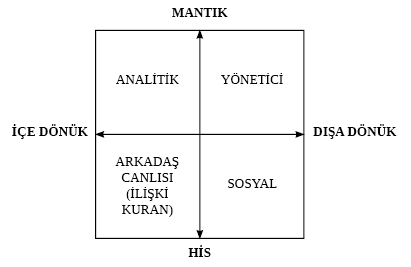
Yukarıdaki Kişilik Türleri Grafiği, insan eğilimlerini içeren dört kişilik türünü göstermektedir. Carl Jung, çığır açan kişilik belirleme çalışmasını yirminci yüzyılın ortalarında açıkladı. Günümüzde Jung’un bu çalışmasının çok ötesine geçtik. Biz kitapta dört temel davranış biçiminin temel hatlarını çizeceğiz. Dinleyicinizin hangi temel kişilik türüne ait olduğunu bildiğinizde sizinle rahat edecekleri şekilde konuşmaları kolaylaşır. İki insan aynı kişiliğe sahip ise frekanslarının tuttuğunu söyleriz. Biri başkasıyla farklı kişiliğe sahipse fakat onunla kendi tarzında iletişim kuruyorsa bu insanlar da aynı frekanstadır. Bu soğanın katmanlarını soymak için esastır. İnsanlar neredeyse siz de orada olun.
Dört Temel Kişilik Türünü Kullanarak İletişim Kurmak - ANALİTİK (DÜŞÜNEN) KİŞİLİK
Düşünen kişiliğe sahip insan içine kapanık ve çok gerçekçidir. Problem çözmekten zevk alır veya bu konuda iyidir. Yavaş karar verir ve genellikle her fikir, teklif ve alışverişle ilgili çok detay ister. Harekete geçme konusunda yavaştır. Kesin verilerden hoşlanır. Hislerini çok fazla göstermeyi veya ifade etmeyi zayıflık olarak görür. Zekâya, mantığa ve gerçekçi düşünenlere saygı duyar. Çoğu muhasebeci, mühendis ve bilgisayar programcısı bu gruba girer.
Bir şey hakkında bütün bilgileri açıkça değerlendiren insanları dinlerler ve duygusal konuşmazlar. Bir konuyu gündeme getirmeden önce problem veya zorluğu göz önünde bulundurmuş insanları dinlemekle ilgilenirler. Duygusal patlamalara saygı duymazlar.
ANALİTİK (DÜŞÜNEN) BİR İNSAN NASIL BELİRLENİR?
Düşünen insanlar bakımlı ve titiz giyinirler. Çok düzenlidirler. Kurallara sonuna kadar uyarlar ve başkalarının da uyması konusunda ısrarcıdırlar. Başkalarına karşı çok şefkatlidirler. Çoğunlukla kendileriyle, o veya bu şekilde yeterli gelmeyi başaramamalarıyla ilgili nazik olmayan yorumlarda bulunurlar. Bir şeylerin, insanların mükemmel olmasını isterler. Sinirlenmekle tehdit ederek kişiler arası ilişkilerinde kontrolü sıklıkla ele alırlar. Başkalarından gelen desteği ve bazı zamanlarda yalnızlığı içtenlikle takdir ederler.
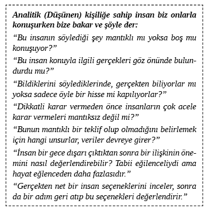
Analitik insanla konuşmada onlarla bağ kurmanızı sağlayan bazı kelimeler ve ifadeler vardır. Düşünen insanın frekansıyla paralellik kurmaya yardım edecek kelimeler aşağıda sıralanmıştır:
Gerçekçi İdareli
Mantıklı İncelemek
Hassas Eşitlik
Odaklanmış Alt sınır
Dikkat Tutumlu
Dikkatli Makul
Detay İdrak Edebilen
Düşünmek İstatistiklere Dayanarak Konuşan
Hesaplamak Her Şeyi Göz Önünde Bulunduran
Değerlendirmek İki Farklı Şeyi Kıyaslayan
Ölçülmüş Tartıp Düşünülmüş
Değer Faydalı
İki Benzer Şeyi Kıyaslamak
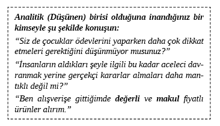
İLİŞKİ KURAN KİŞİLİK
İlişki kuran kişi sessizdir ve hisleriyle düşünür. Normalde başka insanların hislerini önemseyen, yumuşak konuşan biridir. Kendi hislerini de önemser ve hassastır. Yavaş karar verir ve normalde karar almadan veya alışveriş yapmadan önce başkalarının onayını bekler. Başka insanlara özen göstermeyi sever ve bunun için onu takdir etmenizi ister. Başkalarına bakma konusunda iyidir ve her alanda iyileştirici görülebilir. Herkesle her şeyin yolunda gitmesini ister. Mümkün olduğunca stresli durumlardan kaçınmak ister. Başkalarının saygısını içtenlikle takdir eder. Projeleri ve sorunları erteleyerek kontrolü kazanmaya çalışır.
Bu tarz kimselerle aynı frekansta olmanıza yardım edecek kelimeler aşağıda sıralanmıştır:
Kibar Nazik
Hoş Sevmek
Mutlu Paylaşmak
Endişe Dokunmak
Hissetmek Beslemek
Sessiz Önemsemek
Memnun Diplomatik
Tutarlı Dinlemek
İlişki kuran insanlar onların ve başkalarının hisleriyle ilgilendiğinizi bildiklerinde dinlerler. Arkadaş canlısı insanlar, başkalarını kırmış kişileri dinlemezler. Çabuk alınırlar ve konuşurken başkalarını gücendirmemeye dikkat ederler.
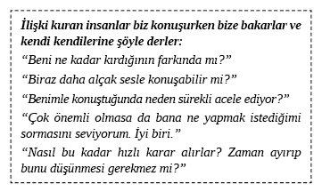
İLİŞKİ KURAN BİR İNSAN NASIL BELİRLENİR?
İlişki kuran insan genelde çok geniş ve rahattır. Karşı karşıya gelmekten, düşmanca durumlardan kaçınır. Alçak sesle, kibar ve dolaylı konuşur. Bu insan karar vermeyi sevmez, başkalarını karar vermeye teşvik eder veya çoğunluğa uyar.
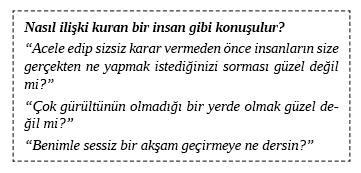
SOSYAL KİŞİLİK
Sosyal insan kişiler arası iletişim konusunda başarılıdır. İnsanları sohbete dâhil etmekten hoşlanır. Bütün gece uyumayıp konuşabilir. Parti veren, grup aktiviteleri düzenleyen ve partinin atardamarı olan biridir. Onu üç-dört saatliğine ziyaret edip gittiğinizde kırılır. Eğlenmek ve ilişki kurmak ister. Bir şey almadan önce başkalarının önerisine ihtiyaç duysa da oldukça çabuk karar verir. Aşırı sosyal insan (grafiğin merkezinden en uzak) fazlasıyla uzun ve çok hızlı konuşur. Sosyal insanlar, karşısındakilerle paylaşmak istediklerine kendilerini çok kaptırdıklarında onları dinlemeyi bazen unuturlar. Sıkılmadan aynı konudan saatlerce bahsedebilirler. Çoğunlukla hissettikleri şekilde konuşup iletişimde kendilerini kısıtlamadıklarından farkına varmadan başkalarını kırabilirler. Sizin onay ve kabulünüzü almak için çok uğraşırlar; bu nedenle onları doğrulayın. Durumları çekiciliği ve karizmasıyla kontrolü altına alırlar.
Sosyal insan kendisini dinlemekten zevk aldığınızı öğrendiğinde sizi dinleyecektir. Söyleyeceğini çoğunlukla desteklerseniz ve bakış açınız konusunda yeteri kadar kararlıysanız size katılacaktır. Sizi dinlemeden önce sizin onu dinlemenizi ister.
Sosyal insanlarla aynı frekansta olmanıza yardım edecek kelimeler aşağıda sıralanmıştır:
Eğlence Enerji
Keyif Mutlu
Tadını çıkarmak Aktivite
Parti Etkinlik
Konuşmak Aşk
Akmak Gitmek
Neşeli Heyecanlı
Şakacı İyimser
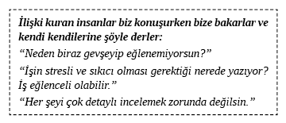
SOSYAL İNSANLAR NASIL BELİRLENİR?
Sosyal insanlar konuşmadıkları zaman rahatsız olurlar. Eğlenirken kendilerini iyi hissederler. En azından kamusal alanda filozofik konulardan bahsetmeyi tercih etmezler. Etraflarındaki şeylerden ve insanlardan çok etkilenirler. Sosyal insanların çoğu kadındır. Gerçekleri ölçüp biçerek değil de hislerine dayanarak karar alma eğilimindedirler.
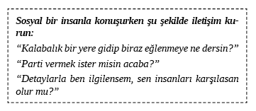
LİDER KİŞİLİK
Lider kişilikli insan herhangi bir işte sorumlu kişidir ve hızlı kararlar alır. Duygusal düşünür ve insanlara karşı çok açıktır. Sosyal insana göre daha az laf kalabalığı yapar ama tıpkı onlar gibi başkalarını kırabilir. Sonuç odaklıdır. Bir işin hemen yapılıp bitirilmesini ister. Liderler mantıklıdır ve çabuk düşünürler. Çok fazla karar verirler. Hata yapmayı sevmeseler de o kadar çok karar verilirse hata yapmak kaçınılmazdır. Liderler genel tabloya bakıp detayı, kendileri için çalışan analitiklere bırakırlar. Çoğu üst düzey CEO ve girişimci liderdir. Ailede anne-babalar kendiliklerinden yönetici rolü edinirler. Sosyal insanlarda kadınlar çoğunluktayken yöneticilerin büyük kısmını erkekler oluştur. İş ve özel hayatlarında en yakın oldukları insanlar dışındaki herkesle az ve öz iletişimi tercih ederler. Çok çabuk yargıya varırlar.
Bir liderin sizi dinlemesini istiyorsanız az ve öz, yerinde ve hatasız olmalı, konuşmanızı önceden hazırlamalısınız. Lider sizi konuşmaya dâhil edecekse söyledikleriniz pratik açıdan çabuk ve açık olmalıdır. Onun zaman kısıtlamalarını tanır ve anlarsanız lider sizi dinleyecektir.
Liderlerle aynı frekansta olmanıza yardım edecek kelimeler aşağıda sıralanmıştır:
Sonuçlar Başarı
Hızlı Karar vermek
Başarmak Kısa
Genel Genel Tablo
Zamanında Zamanla
Az ve Öz Etkin
Macera İkna etmek
Kesin Bağımsız
LİDERLER NASIL BELİRLENİR?
Lider genelde partinin ilgi odağı değildir ama çoğunlukla sonra aranır. Güveni ve tarzı, onun kontrolü elinde tuttuğunu kesinlikle hissettirecektir. Çabuk yürür ve hızlı konuşur. Önemsiz konuşmaların çok kısa olmasından hoşlanır. Saygı duyup sevdiği insanlarla çok fazla detaya girer.
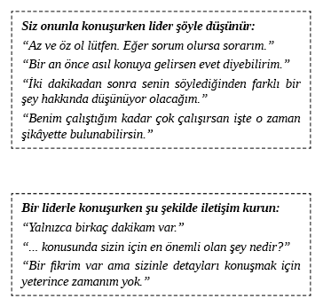
Dört kişilik türünü değerlendirdiğinize göre hangi gruba girdiğinize karar verin. Karar verince birlikte yaşadığınız ve birlikte çalıştığınız insanların hangi gruba girdiğini yazın. Onlarla burada belirtildiği gibi gereken şekilde iletişim kuruyor musunuz? Yarın neyi daha farklı yapabilirsiniz?
Daha İyi İletişim için Frekansları Değiştirmek
Sizin ve etrafınızdakilerin hangi kişilik grubuna girdiğini düşününce etkin iletişimin önünde hâlâ bazı engeller bulunduğunu keşfedersiniz. Çoğu kişi tüm insanların tercih ettiği iletişim frekanslarının varlığını bilmez. Bazı insanlar çok hızlı konuşurken bazılarının çok yavaş konuştuğunu fark ettiniz mi? Hepimiz insanlarla iletişim kurarken karşımızdakilerin ses tonlarına ve konuşma hızlarına göre cevap veririz.
HIZLI KONUŞANLAR
Hızlı konuşmacılar genelde görsel iletişimcilerdir. Bu insanlar resim gibi ifadelerle düşünür ve konuşurlar. Yavaş konuşanlar ‘hızlı konuşmacıların’ saklayacak bir şeyleri olduğunu düşünürler ve genelde onlara güvenmezler. Hızlı konuşmacılar diğer hızlı konuşan insanları zeki ve dikkatli insanlar olarak görürler. Ortalama hızda konuşanlar ise hızlı konuşmacıyı genellikle iyi anlamda biraz dikkatsiz ve bir işe çabucak dalan insanlar olarak kategorize ederler.
Hızlı konuşan insanlar normalde zihinlerindeki resmi ve filmleri belirten ifadeler kullanırlar. Karşısındakilerin onları dinlerken sıkılabileceklerinin de farkındadırlar. Dolayısıyla kısa zaman dilimine çok bilgi sıkıştırmaya çalışırlar.
ORTA HIZDA KONUŞANLAR
Bir haber spikeri gibi konuşan insanlar, işitsel iletişimciler kategorisine girerler. Hoş ve tınılı sesleri vardır. Konuşmayı ve dinlemeyi orta hızda tercih ederler. İşitsel iletişimciler, kelimelerle ve seslerle düşünürler. Net ve düzenli konuşan insanlarla iletişim kurmaktan zevk alırlar. Yavaş konuşanlar, onları kendilerinden biraz daha az yetkin görürler. Orta hızda konuşanlar ise kendileri gibileri kafa dengi, düşünceli, zeki ve dikkatli addederler.
YAVAŞ KONUŞANLAR
Çoğu insan çok yavaş konuşur. Bu insanlar genellikle hayatı kinestetik olarak yaşayan bireylerdir. His odaklı insanlardır. Duygusal olabilirler veya olmayabilirler ama içgüdülerine güvenirler. Cevap vermeden veya bir sohbete girmeden önce durumla ilgili ne hissettiklerini görmeleri gerekir. Hızlı konuşan insanlar, onları daha az zeki olarak görürler ve genellikle yavaş konuşan kişiyle iletişim kurmaktan sıkılırlar. Orta hızda konuşan kişiler, yavaş konuşanlara kibar davranırlar fakat iletişimdeki cevap süresinin yavaşlığından sıkılırlar. Yavaş konuşanlar, diğer yavaş konuşan kimseleri başkalarıyla hislerini paylaşmadan önce düşünen kibar, iyi kalpli insanlar olarak görürler. Birbirlerini ihtiyatlı, ‘bir şeye dalmadan önce düşünen’, başkalarının duygusal durumlarıyla çok ilgilenen kimseler şeklinde algılarlar.
Söylediklerini Gerçekten Dinlemek
Kişilik Grafiği, insanların nasıl farklı düşünüp konuştuklarını görmemizi sağlar. Daha ileri gitmeden önce anlaşılması önem taşıyan başka davranışsal eğilimler de vardır. Bu eğilimlerin her biri grafiğe Düşünen/Hisseden ve Dışa dönük/İçe dönük olarak kolaylıkla yerleştirilebilir. Bunlar, kişiliği anlamada yardım edecek ilk keşfedilen ve kullanılan eğilimlerdir. Artık bu yüzyılın sonunda, meta program olarak bilinen birçok yeni davranışsal eğilim belirledik.
Yeni Meta Programlar
Her birimizde programların kesinlikle çakışması özelliği vardır. Eğer NBC haberlerini izleyip CBS haberlerine geçerseniz bazı haberlerin aynı ve bazılarının ise kanala özgü olduğunu görürsünüz. Meta programlar bu duruma benzer. Bu kısımda, bazı kişilerin nasıl ve neden şu yaptıkları şekilde iletişim kurduklarını anlamak açısından büyük önem taşıyan yeni ‘meta programlardan’ bazılarını öğreneceksiniz. İki meta program arasında ilişki olduğunu düşünebilirsiniz. Zihninizde işleyen bu programların bilinçli şekilde farkında olduğunuzun, iletişimde kişisel özellikleri anlama ve kullanmanın bir göstergesidir.
Meta programlar en derin algı ‘filtreleri’ arasında yer alır. Bu içsel ayırma örnekleri, bilmeden neye dikkat ettiğimize karar vermemizi sağlar. Genel konuşmak gerekirse meta programlar ‘içeriksiz ama bağlamlıdır’. Bir kişinin meta programları bilgisayar programı gibi veri depolamaz ama birini hayatta nelerin tetiklediğini belirler. Bir insanın ruh hali, içsel imajların (bilinçli ve bilinçsiz olarak bir kimsenin dünyayı nasıl gördüğüne dair görüntüler) oluşmasında önemli rol oynayan meta programlarından etkilenir.
Bir bilgisayar programını verimli kullanabilmek için onu nasıl kullanacağınızı anlamalısınız. Etkin iletişim kurabilmek için karşınızdakilerin hangi tür meta programlar kullandığını anlamalısınız çünkü meta programlar genellemelerimizi düzenleyen silici ve bozucu filtrelerdir. Meta programlarını bilirsek gerçekten iletişim kurduğumuz herkesin ruh halini tahmin edebiliriz. Müşterinizin içsel durumunu tahmin edebilirseniz kolaylıkla genel olarak ne düşündüğünü ve onlarla en iyi nasıl konuşulacağını bilebilirsiniz.
Bireyler için ayırma örnekleri, türler, özellikler ve işlevler olarak belirlenen yaklaşık elli tane meta program vardır. Şimdi iletişim sürecini en çok etkileyen ‘yeni’ meta programları öğreneceksiniz. Bütün meta programların bir süreklilikte var olduğunu ve kişilik imajları olmadığını unutmayınız. Önceden de belirtildiği üzere bazı insanlar çok dışa dönük bazıları da biraz dışa dönük olabilirler. Dışa dönük ve çok dışa dönük insanlar arasındaki davranışsal farklılıklar, durup dinlemeden sürekli konuşan birine kıyasla iyi bir iletişimci için analojik olarak tanımlanabilir.
Jung, Myers, Briggs, Keirsey ve Bates’in bize mükemmelen öğrettikleri dört temel meta programı (davranışsal eğilimleri) ele aldık. ‘Yeni meta programları’ veya davranışsal eğilimleri öğrendikçe konuştuğunuz kişinin zihninin kapılarını açan anahtar kelimeler ve ifadeleri de keşfedeceksiniz. Bu güçlü bilgiyi nasıl kullandığınız, kendi kendinize farkında olmanız gereken bir şeydir. İncelemek istediğimiz meta programlardan ilki acı/zevk ayırıcı örnektir. Bu meta program büyük ihtimalle hayatta konuşarak zirveye çıkmak için en önemli meta programdır.
Zevk/Acı Eğilimi
A. Acıdan Kaçınmak için ..... Zevkini Tatmak
Bir şeylerin şu anki halinde sıkılmak Parlak gelecek
Acı çekmeyi bırakmak Mükemmel hissetmek
Uzaklaşmak Yönelmek
Yalnız olmayı bırakmak Yeni arkadaşlar edinmek
Kurtulmak Elde etmek
Arkadaşlarınız ve ortaklarınızla konuşurken zihninizde onlar için mükemmel bir geleceğe yönelik canlı bir imaj yaratmakla kalmayıp onların şu anki yaralarını (acılarını) da bulmanız ve onları iyileştirmeniz gerektiği ne anlama gelir? Aslında bu önemli davranışsal eğilim, yüzlerce başka eğilimi tetikler ve hangi insanların acıdan kaçınmak için her şeyi yapabileceğini belirlemede temel anahtar rolü üstlenir.
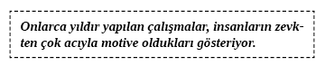
Kitabın önceki bölümlerindeki bir insanın iletişim tarzının çocukluk deneyimleriyle nasıl şekillenebildiğini anlamamıza yardımcı olan örnekleri hatırlayın. Bir an satış bölümünde olduğunuzu hayal edin. Müşterilerinizden birini, yanlış davrandığında düzenli şekilde acıyla (vurmak, tokat, ayrıcalıkların kaybı vb.) tehdit edilen bir çocuk gibi hayal edin. Bu çocuk birçok başka davranışsal eğilimin dâhil olduğu güçlü bir davranışsal eğilim geliştirmiştir. Müşterilerinizin çok azının anne-babası çocuklarını iyi davranışlar için ödüllendirerek motive ederler. Çoğu ebeveyn uysallık elde etmek için ceza vermeye yönelik tehditler kullanır. Müşteriniz acıdan kaçınabileceği her şeyi yapmayı sürekli ister. Bu isteklerinize uymak anlamına geliyorsa o zaman uyar.
Amway Foundation isimli vakıf, girişimcilik ruhu olanların zihinlerini kontrol ederek ve acı/zevk meta programının zevk kısmına odaklanarak dünyadaki en büyük özel şirketlerden birini kurmuştur. Dağıtımcılarının hayallerini gerçekleştirmelerine ve canlı, verimli gelecekler oluşturmalarına yardım ediyorlar. Pratik olarak dağıtımcıları zevke doğru yönlendiriyorlar.
Aksine, dünyanın en iyi yüzlerce şirketi acı/zevk meta programının acı kısmına odaklanarak zihinleri kontrol edip zenginleşmişlerdir. Tarihi ve bilimsel araştırmalar insanların acıya karşı isteksiz olduklarını göstermiştir. Yukarıda belirtildiği üzere çoğu insan zevki tatmaktansa acıdan kaçınmak için çok daha fazla şey yaparlar. Acı yaşamak, reklamcılık sektöründe milyarlarca doların tetikleyici gücüdür. Şu sloganların ve reklam konularının hangisi size tanıdık geliyor?
“Şimdi canınız Burger King çekiyor mu?”
“Baş ağrısı çekiyor musunuz?”
“Bir yeriniz ağrıyor mu?”
“Gece uyuyamıyor musunuz?”
Müşterinizle veya başka bir dinleyiciyle konuşurken kısmen de olsa işiniz, ürününüzün ve hizmetinizin eğer kabul ederlerse onlar için mükemmel bir memnuniyet yaratacağını, acıdan kaçınma şekli olabileceğini göstermektir. Sizinle anlaşamazlarsa yaralarının ne kadar büyüyeceğini ve bunun onlara gelecekte nasıl acı vereceğini gösterin. Anlaşırlarsa yaralarını iyileştirmelerine yardım edin.
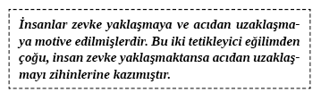
Dünyanın en motive edici konuşmacılarından Anthony Robbins şu an oturduğu zirveye, sizin karşınızdakilere yardım etmelerine izin vermedikleri takdirde neler olabileceğine dair insanların zihinlerinde gerçekçi görüntüler oluşturabildiği için yerleşti. Siz de aynen Robbins’in yaptığı gibi acı/zevk meta programının gücünü kullanabilirsiniz.
Dinleyicinizin meta programlarını öğrenirseniz o zaman burada incelediğimiz genel kurallara güvenmek yerine öğrendiğiniz bağlama özel bilgilere odaklanabilirsiniz. Örneğin, pazarlama ürünlerinde normlara güvenmek zorundayız. Öte yandan doğrudan satış durumlarında her müşteriyi ayrı ayrı neyin motive ettiğini tam olarak bilmenin bariz avantajına sahibiz.
Müşterinin sizinle çalışmamanın verdiği acıyı tatmasını sağlayacak etkili dil yönetimi sizin, “Şimdi harekete geçmezseniz o zaman her şey daha kötüye gitmez mi?” gibi çeşitli yara açıcı ifadeler kullanmanızdır.
Müşteri ne kadar çok korkarsa ve acıdan uzaklaşırsa, şimdi harekete geçme olasılığı o kadar çoktur. Örneğin, sizinle çalışmamanın sonuçlarına dair tablo çizmek bizim görevimizdir. Acıyı tatmak bir fikirden çok daha fazlası ve dinleyici için de gerçek olmalıdır.
Değişiklik gerektiren, kazandıran fikirlerimizi paylaşmakta başarı gösteremezsek o zaman değişimi çok fazla acıyla ilişkilendirdiklerinden ve biz de üstümüze düşeni yapmadığımızdan bu fikirleri kabullenmezler. Hâlâ ikna olmamışsa hiçbir şey bir kişinin bakış açısını değiştirmesini veya bir ürünü satın almasını sağlayamaz. Duygusal veya mantıklı fark etmez, insanların sizin ürünlerinizi ve hizmetlerinizi kabul etmeleri için açık ve net faydaları görmelerini sağlamalısınız.
Zirveye doğru yolculukta iletişimci olarak sizin göreviniz mevcut durumu daha vahim hale getirmektir. Çoğu insan değişmekten korkar. Bu genellikle onların genlerinde vardır. Genlerinde olmadığı durumlarda da korku onlara çocuklukta aşılanır. Bu yüzden mevcut durum acı verici gösterilmelidir. Değişmemenin vereceği acıyı ortaya çıkarıp bunu oldukça gerçekçi hale getirmelisiniz. Mevcut durumunda eksiklikler bulunan ya da çok az da olsa acıya rastlamayan biri teklifinizi kabul etmeyecek, hayır diyecektir.
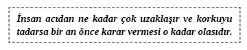
Amway Foundation, olası girişimcilerin kendi bünyelerinde yer alamamalarının acısını hissetmelerini sağlamak için mükemmel bir araç kullandı. Bir anlığına karşınıza dağıtımcı olarak katılma fırsatı çıktığını hatırlıyormuş gibi yapın. Konuşmacının geleceğinize dair çizdiği en karanlık tablolardan birisi de şuydu: Dağıtımcı olmazsanız ekonomik özgürlüğünüzü başka hangi yolla kazanacaksınız? Gerçekten sonsuza kadar aynı işte çalışmak istiyor musunuz? Hayatınızın sonuna kadar yıllık 35.000 dolarla gerçekten mutlu olacak mısınız?
Amway’in, herhangi bir şirketin veya satış temsilcisinin bu konulara karışmaya hakkı var mı? Size göre var çünkü onlar dünyanın dönmesini sağlayan şirkettir. Çok düzeyli pazarlama, her birey için öne çıkan bir girişim fırsatı olabilir veya olmayabilir. Ancak Amway’in nasıl bu kadar genişlediğini düşünün: Amway acı/zevk meta programını dünyadaki bütün özel şirketlerden daha iyi kullanıyor.
BU DENEYİM 100 DOLAR DEĞERİNDE–ŞİMDİ YAPIN
Müşterileriniz sizin ürününüze sahip olmazsa veya hizmetlerinizden faydalanmazsa karşılaşacakları yirmi acı dolu geleceği aşağıdaki boşluğa yazın. Sonra da müşterileriniz sizin ürününüzü edinirse veya hizmetlerinizden faydalanırsa karşılaşacakları yirmi parlak geleceği yazın. Sonra bir müşterinizle görüştüğünüzde ona sunacağınız çok geniş bir gelecek yelpazesi elde edeceksiniz. Ek işte yılda kazanacağınız binlerce doları dinleyicinizin görmesini sağlamak yarattığınız tabloların niteliğidir.
Fiyat/Kazanç Oranı
B. Fiyat............. Kazanç
Satış veya pazarlama ile uğraşıyorsanız bu oranı dikkatlice okuyup anlamalısınız. İstemezseniz sonraki kısma geçebilirsiniz. Satış görüşmesinde bir noktada müşterinizin hız ve kazançla mı yoksa fiyatla mı daha çok ilgilendiğini belirlemeniz gerekecektir.
Birçok insan, markete göre çok daha pahalı olsa da birkaç ürün almak için mahallelerindeki bakkala gider. Bakkal köşededir ve oraya hemen gidilebilir. Bu nedenle uygundur. Bakkalın yakınlığı çoğu insan için ürünlerin şişirilmiş fiyatlarından daha önemlidir.
Finansal ürünler satıyorsanız o zaman günlük hisse senedi verilerini yakından kontrol etmeli ve yatırımlarıyla ilgili gün gün karar verecek zamanının gerçekten olup olmadığını öğrenmelisiniz. Bunu onun yerine siz yaparsanız daha memnun kalır mı? Üstünden alacağınız yüke karşılık, onun yatırımlarını idare etmeniz için alacağınız küçük miktar bütün bunlara değer mi?
Gayrimenkul satarsanız, alıcınız evin fiyatından 10.000 dolar kazanç sağlamak için günde fazladan yarım saat gelip gitmeye zaman harcamak ister mi? Alım süreci başlamadan önce bu kişinin fiyatla mı yoksa kazançla mı daha çok motive olduğunu bulmanız gerekir.
İlişki Eğilimi
C. Uyumlu...Uyumlu/Uyumsuz...Uyumsuz/Uyumlu...Kutuplaşma...
...ile aynı ... hariç aynı Tamamen farklı
Ortak Daha fazla Bütünüyle değişti
Önceki gibi İlerleme Türünün tek örneği
Üç tane bozuk para alın ve masada karşınıza koyun. Aşağıda size verilen alanda bu üç bozuk para arasındaki ilişkiyi tanımlayın.
Üç bozuk paranın da para olduğunu, hepsinin bozuk para olduğunu ya da hepsinin yazı olduğunu, hepsinin metal olduğunu söylediyseniz o zaman kendinizi ‘eşleştirici’ olarak adlandırılabilirsiniz.
Paraların bir şekilde benzer ama farklılıkları da olduğunu söylediyseniz o zaman ‘uyumsuzluğu olan bir eşleştirici’ olarak sınıflandırılırsınız.
“Hepsi farklı ama şu ortak yönleri var” tarzı bir şey söylediyseniz o zaman ‘uyumu olan bir zıtlaştırıcı’ olarak sınıflandırılırsınız.
Üç paranın da hiç ortak yönünün bulunmadığı ve birbirlerinden belli bir şekilde farklı olduğu sonucuna vardıysanız o zaman ‘kutuplaştırıcı aracı’ olarak adlandırılırsınız.
Gerçek dünyada bu tarz bir aracı kullanabilirsiniz veya kullanamayabilirsiniz. Birileriyle konuşurken hemen müşterinizin ilişki programını bulmanız gerekiyorsa, “Bu yılki ve geçen seneki işiniz (veya benzer bir şey) arasındaki ilişki nedir?” diye bir soru yöneltirsiniz. Alacağınız cevap süreklilik üzerinde bir yere kadar takip edilebilir bir cevaptır. Bu iletişiminizi şekillendirmenize yardım edecektir.
İkna Edici Eğilimi
D. İçsel.............................Dışsal
... düşünüyorum. O ..... düşünüyor.
... hissediyorum. Onlar bana ..... diyorlar.
İçimden bir his ..... söylüyor. Araştırmalar........ gösteriyor.
Dinleyiciniz bir şey yapıp yapmaması gerektiğini nasıl biliyor? Ona en son başarılı bir şekilde çok büyük karar aldığında nasıl ikna olduğunu sorabilirsiniz. Büyük bir hata yapmaya nasıl ikna olduğunu bilmek istemezsiniz. Nasıl iyi karar almaya ikna olduğunu bilmek istersiniz.
“Şu anki evinizi aldığınıza memnun musunuz?”
“Tabii ki harika bir kararmış.”
“Bu evi almaya sizi ne ikna etti?”
Müşteriniz şimdi size hikâyesini anlatacaktır. Hikâye çoğunlukla onun bu kararı almasına yardımcı olan insanlar veya veriler ve içgüdüleri veya hisleri etrafında yoğunlaşacaktır. Müşterinizin iç veya dış bilgi kaynakları aracılığıyla iyi kararlar vermeye ikna olup olmadığını öğrendiğinizde hızlanabilir ve o bilgi kaynağına yetişebilirsiniz.
“Bunun doğru ev olduğu hissine kapıldım.”
“Bir sonra gezeceğimiz eve baktığınızda aynı hisse kapılıp kapılmadığınızı bana söylemenizi istiyorum.”
veya
“Belirlediğimiz bütün kıstaslara uydu. Üst katta üç yatak odası, bir ofis ve havuzu vardı.”
“Şimdi de şu anki evinizle aynı güzel özelliklere sahip ve şöminesi olan, daha geniş bir ev aradığınızdan bahsetmiştiniz. Bir sonraki eviniz karşımıza çıktığında bana hemen söyleyin.”
İkna Edici – # Kadar Programı
E. Farz edilmiş...Bir kez...Birçok kez...Düzenli Olarak...Her Zaman
Bazı insanlar onlara bir şeyi ilk defa teklif ettiğinizde sizi dinlemeyecektir. Bazıları, teklifiniz konusunda harekete geçmeye karar vermeden önce ona birçok kez bakmaya ihtiyaç duyacaktır. Bu durum söz konusuyken gerçekten harekete geçmeye karar vermeden önce kaliteli bir şeyi kaç kez gördüklerine yönelik meta programı öğrenebiliriz. İşte bir kimsenin bir şeye ikna olma alanındaki davranışsal eğilimini belirleyen satış dünyasından başka örnek.
“Merak ettiğim bir şey var. En son hayat sigortanızı aldığınızda siz kabul etmeden önce sigortacınızın kaç kez gelip size sigortanızın faydalarını göstermesi gerekti?”
“Sigortacım ilk kez gelince bunu konuştuk. Sonra yine aradı ve gelecek hafta tekrar gelmesini söyledik. Geldi ve imzaladık.”
“Anladım. O zaman siz ve eşiniz, çıkarınız için en doğru şeyi yaptığınıza emin olmadan önce size bir gece zaman tanıyan birini tercih ediyorsunuz. Sonra da yarın tekrar gelmemi istiyorsunuz. Doğru mu?”
veya
“Açıkçası sigortacımızdan sigorta alıp almamak konusunda karar vermede oldukça zorlandık. Çok pahalıydı. Sanırım üç-dört kez gidip geldi.”
“Mantıklı. Önemli kararları dikkatlice vermenin zorluğunu anlayabiliyorum. Ben şimdi size birkaç çıktı (öneri) bırakmak istiyorum. Onları inceleyin, yarın tekrar gelirim. Hâlâ dikkatli ilerlemeniz gerektiğini düşünürseniz o zaman haftaya gelirim. Uygun mu?”
Tablo Boyutu Eğilimi
F. Genel/Büyük..........Özel/Detaylı
Genel Kesinlikle
Önemli olan şey Tam olarak
Genel konuşmak gerekirse Kesin olmak gerekirse
Bir şeyi iyi yaptığınızda anlar mısınız yoksa birinin size söylemesini mi tercih edersiniz? Mükemmel bir şey başardıklarını bilen insanların içsel referans tabloları vardır. Onlara mükemmel yaptıklarını birinin söylemesini tercih eden insanların ise dışsal referans tabloları mevcuttur. İletişim kurarken dışsal referans tablosu olan birinin iyi iş çıkarıp çıkarmadığını kendisinin anlamasını bekliyorsanız ve ona iyi yaptığını söylemek istemiyorsanız ona büyük kötülük edersiniz. Ona iyi iş çıkardığını belirtirseniz iletişim yollarını açarsınız çünkü onun dışsal doğrulamaya ihtiyacı vardır. Benzer olarak içsel referans tablosu gelişmiş birini sürekli doğrulamanız pozitif algılanmayacaktır. Gelişmiş içsel referans tablosuna sahip insanlar genelde doğrulama veya herhangi bir dış geri bildirim istemezler.
Güçlü içsel referans tablosuna sahip kimseler, “Ne düşünüyorsun?, Ne hissediyorsun? İçgüdülerin sana ne söylüyor?” vb. ifadeler kullanırsanız sizinleyken daha rahat hissederler. İçte nasıl hissettiklerini bularak bu insanları rahatlatmak istersiniz. Öte yandan güçlü dışsal referans tablosu olan insanlar onlara iyi yaptıklarını söylediğinizde daha rahat hissederler. “Bana sizin ... olduğunuzu söyledi/söylediler. Araştırmalar .... konusunda iyi bir karar verdiğinizi gösteriyor” gibi ifadeler duyunca daha rahat hissedeceklerdir.
Bu eğilimi incelemenin bir başka yolu da aktif ikna sürecinde yatar.
Fikirlerinizin, ürünlerinizin, hizmetlerinizin detayları ve nüanslarından bahsetmeye başladığınızda konuştuğunuz insanlardan bazılarının ölesiye sıkıldığını fark ettiniz mi? Bu kimseler ‘genel tablo odaklı’ olarak adlandırdıklarımızdır. Öte yandan diğer insanlar onlara genel bilgiler verdiğinizde onları aldattığınızı düşünecekler ve bütün detayları isteyeceklerdir. Herhangi bir bilginin özeti ve detaylı bir geleceğe yönelik tükenme payı sizi onların gözünden düşürecektir ve söyleyeceğiniz hiçbir şeyi dinlemeyeceklerdir. Bu insanlara ‘detay dinleyiciler’ denir.
Acelesi olan kişiler genelde teklifinizi dört dakikalık konuşmaya sığdırmanıza ihtiyaç duyarlar. Daha fazla bilgi isterlerse size soracaklardır. Böylece gün içinde birincil öncelikleri haline gelirsiniz. Bu gerçekten hızlı konuştuğunuz anlamına gelebilir de gelmeyebilir de. Ne konuşuyorsanız konuşun bunu zekice yirmi saniye, yirmi dakika veya iki saate sığdırabilmeniz anlamına gelir. Yirmi saniyede araba, yirmi dakikada ev alacak insanlarla karşılaşacaksınız. Üstünde saatlerce, günlerce, haftalarca ve aylarca düşünmeden bir şey almayacak insanlarla da tanışacaksınız. Onların ‘Tablo Boyutu Eğilimleri’nden haberdar olun ve böylece onlarla aynı frekansı yakalama olasılığınızı artırabilirsiniz.
Birinin genel mi yoksa özel dinleyici mi olduğuna dair eğilimini nasıl anlarsınız? “En son arabanızı ne zaman aldınız? Satıcıya olumlu yanıt vermeden önce ne kadar düşünmeniz gerekti? Size arabayla ilgili bütün özelliklerden bahsetti mi, yoksa arabayı görüp, ‘Aa! Bu güzel bir arabaymış. Alıyorum’ mu dediniz?” gibi şeyler sorun.
Genel tablo odaklı insanlar ‘genel, önemli olan şey, genel konuşmak gerekirse’ gibi ifadeleri duyunca rahat hissederler. Çok fazla detay duymak isteyen insanlar, ‘kesinlikle, tam olarak, kesin olmak gerekirse’ gibi şeyler duyunca daha iyi hissedeceklerdir.
Olasılık/Gereklilik Eğilimi
G. Olasılık......................Gereklilik
Olasılık Olmalı
Şans Gerekirse
Olabilir Eğer
Yine satış dünyasından bir örnek. Müşteriniz finansal ürünlerinizi emeklilikte bir sığınağa gerek duyduğu için mi, emeklilik yıllarını nasıl geçireceği olasılıklarını artırdığı için mi satın alıyor? Bu ayrım önemli olabilir.
Anında uyum için fikirlerinizi, ürünlerinizi ve hizmetlerinizi müşterilerinizin meta programlarıyla aynı filtrelerden geçirerek sunmalısınız. Müşteriniz ona yurt dışına çıkabilme ve özgür olma şansı sunacağı için yatırım fonlarına yöneliyorsa o olasılık yatırımın alıcısıdır. Sosyal güvenliğin yerine geçecek paraya ihtiyacı olacağı için ona satış yapmaya çalışan başka bir satış temsilcisi filtreyi kullanmadığı için başarısızlığa uğrayacaktır.
İşte o insanın olasılık mı gereklilik mi düşündüğünü bulmaya yarayan bir soru.
“Şu an içinde bulunduğunuz sektörde neden çalışıyorsunuz?”
Müşteriniz ya işi yapmak zorunda kalmıştır ya elinde var olan işe başlamıştır ya da bu işi ya da sektörü daha parlak kariyer için bir fırsat veya olasılık gibi görmüştür. Müşterinizin bu yelpazenin neresinde yer aldığını anladığınızda filtreyi de kullanabilirsiniz. Bütün meta programlarda olduğu gibi müşterinizin meta programı hızına uyum sağlarsanız ve filtrelerle çalışırsanız çabucak işbirliği elde edersiniz.
Olasılık/Gereklilik ve Acı/Zevk meta programları arasındaki benzerlikler ve farklılıklar nelerdir? Hangi farklılıkları fark ediyorsunuz?
Değişim/Mevcut Durum Eğilimi
H. Değişim...........................Mevcut Durum
Farklılaşmak Tutarlı olmak
Gelişmek Sabit kalmak
Değişmek İstikrarlı olmak
Yönünü değiştirmek Aynı yerde durmak
Müşteriniz her şeyin olduğu gibi kalmasını mı istiyor? Kendisinin ve işinin geliştiğini, büyümeyi görmek istiyor mu? Değişmek istiyor mu? Mevcut durumu korumaya ihtiyaç duyuyor mu?
Müşterinizin Değişim/Durum meta programını bilirseniz mevcut durumda güven ve değişimde heyecan yaratmak açısından çok büyük fırsata sahip olursunuz.
Değişmek isteyen insanlar nadiren bir işte uzun süre kalırlar. Çabucak sıkılırlar ve sürekli yeni şeyler denemek isterler. Mevcut durumu sevenler aynı işlerde kalacaklardır ve günlerce, aylarca, yıllarca aynı şeyi yapacaklardır.
Kolaylıkla Kabul Et/Şüpheci-Kapalı Programı
I. Kabul Ediyor........ Tedbirli............ Şüpheci..............Kapalı
Anlamak Dikkatle farkında olma Asla
Koşulsuz Gözden geçirme Olamaz
Her zaman Bazen Mantıksız
Arkadaş canlısı Heyecanlı Hayır
Dinleyicinizin, yeni fikirleri açıkça kabul eden bir kişiden şüphe duyan bir kişiye değiştiğini fark edeceksiniz. Bu eğilimin ‘değişim/mevcut durum’ eğilimiyle benzerlikleri var ama aynı değiller. Kabul eden insanlar dinlemeye isteklidirler. Kapalı olanlar, çoğunlukla hayatlarında meydana gelen bazı olaylardan dolayı böyledir. Fikirlere kapalı kimseler, bir zamanlar savunmasız oldukları, acı çektikleri veya kullanıldıkları için o hale gelmişlerdir. Bu insanlar âdeta ‘Israr Yok!’ yazılı pankartlarla gezerler. Her satış temsilcisinin bildiği üzere bu tarz kişiler en kolay işbirliği kurulanlar arasında yer alır.
Algı Eğilimi
Dünyayı nasıl algılıyorsunuz? Bu ‘sezen’ mi ‘hisseden’ mi olduğunuza bağlıdır. Sezen kişi hissedene oranla büyük oranda bilinçsiz zihniyle yönetilir. Hissedici beş duyusuyla ve bazı doğrulanabilir deneyimlerle yönlendirilir. Hisseden kişiler, geçmiş veya gelecek konusunda endişe duymama eğilimi gösterirler. Bir ortamda gün içinde bir kez bulunurlar. Hissedenler veriler ve bilgilere çok dikkat ederler. Beş duyularının an an neler yaşadığının farkındadırlar. Hissediciler birtakım becerileri öğrendikten sonra ustalaşma eğilimi gösterirler.
Sezgisel kişi çoğunlukla etrafında olan bitenin farkında değilmiş gibi görünebilir. Hikâyeleri dinlerken kendini rahat hisseder ve çok fazla metafor kullanarak konuşabilir. Bu tarz insanlar görselliği severler ve onlara anlatacak hikâyeniz varsa hevesle dinlerler. Kişiler arasındaki bağlantıları ve kopuklukları, maneviyatın en derin yönlerini vb. şeyleri anlamaya çalışırlar. Gerçekleri olduğu gibi kabul etmekten memnuniyet duymazlar. Yeni bir şey öğrendikten sonra sıkılma eğilimi gösterirler. Bu yüzden hisseden kişiliğe kıyasla çok daha çabuk yeni ufuklara yelken açarlar.
Sezgileriyle yönlendirilen insanlar önsezi, gelecek, varsayımda bulunmak, ilham, düşleme, mümkün, hayal ürünü, yaratıcı ve hayal gücü kuvvetli gibi kelimeleri duyduklarında çok rahat hissederler. Hissedici kişiliğe mensup kimseler bağlamda doğrulanabilir kelimeleri duyunca çok daha rahat hissederler. Bunlar mantık, geçmiş, gerçekçi, asıl, ayakları yere basan, saçmalık yok, gerçek, pratik ve akla yatkın gibi kelimeleri içerebilir.
İngilizce konuşan insanların yaklaşık üçte ikisi hisseden insanlardır.
Kapalılık Eğilimi
Son davranışsal eğilim kapalılıktır. Bu süreklilikte iki uç nokta vardır. Birisi ‘yargılayan’ diğeri de ‘algılayan’ kişiliktir. Yargılayan kişilik dış dünyayı eski moda bir biçimde ele alır. Algılayan kişilik ise dış dünyayı görür ve onu olduğu gibi kabul eder. Yargılama başladığında algılama biter. Bu iki tavır başka eğilimlerdeki gibi normalde eş zamanlı meydana gelmez.
Bir insan, iletişimi veya tartışmayı yeterli bilgi oluşana kadar kabul eder ve sonra yargılama başlar. Benzer şekilde bir kişi yeteri kadar algılanmış bilgi elde edene kadar yargılamaya ara verir. Bu süreklilikteki farklılık, insanın kendini rahat hissettiği şeydir. İnsanlar bir yargıya varmayı mı yoksa düşünüp algılamayı mı tercih ederler? Yargılayıcı kişilikler hayatlarını sıraya koymaya eğilimlidirler. Algılayıcı kişilikler hayatlarını akışına bırakma eğilimindedirler.
Yargılayıcı kişilik günün, haftanın ve yılın olaylarını planlamaktan hoşlanır. Öte yandan algılayıcı kişilik, anı yaşamak ve her şeyi akışına bırakmayı sever. Spontane olmaktan hoşlanır.
Yargılayıcı insan çabuk kararlar alırken, algılayıcı genellikle karar verme sürecinde strese girer. Yargılayıcı kişilik kapalılığı sever ve bir şey ne kadar erken olursa o kadar iyidir fikrini benimser. Çünkü bu kişilik çabuk kararlar verir ve kararları konusunda olumlu düşünür. İletişimde dıştan otorite imajı çizerler. Algılayıcılar, seçeneklerinin açık olmasını severler ve bu yüzden karar verme sürecinde tereddüt ettikleri görülür. Bir yargıya varma konusunda yavaş oldukları için kontrolü ellerinde tutuyormuş gibi görünmezler.
Yargılayıcı kişiliğe sahip insanlar bir yere birkaç dakika erken veya tam zamanında giderler. Eğlenmeden önce bütün işi bitirirler. Memnuniyetlerini erteleme konusunda çok başarılıdırlar. Algılayıcı, insanların birkaç dakika için neden strese girdiğini merak eder. Bir yere geç gitme eğilimindedirler ama bundan hiç de memnun değildirler. Bu kişiliğe mensup kimseler erteleyicidir.
Yargılayıcı kişiliğe sahip insanlar, düzene girmiş, karar verilmiş, belirlenmiş, önceden planlamak, hayat için çabalamak, kapalılık, karar verme, planlama ve tamamlanmış kelimelerini duyunca huzurlu hissederler. Algılayıcı kişilikteki insanlar beklemede, daha fazla bilgi toplamak, esnek, size uyum sağlayan, bırakın hayat aksın gitsin, seçenekleriniz açık olsun, ‘hazine avcılığı’, açık uçlu, gelişmekte olan gibi kelimeleri ve ifadeleri duyunca daha rahat hisseder.
İngilizce konuşan nüfus, bu davranışsal eğilimde yarı yarıya dağılım gösterir.
Sonraki bölümde zihinden yüze ve vücuda geçeceksiniz. Vücudunuz ne söylüyor? Sizin zirveye çıkmanıza yardım ediyor mu yoksa sizi bundan alıkoyuyor mu? Sayfayı çevirin ve çok az insanın bildiği bir şeyi keşfedin.